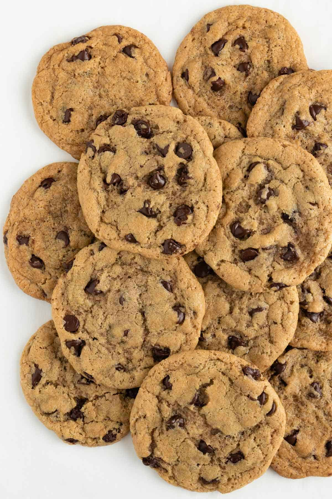

B's Chocolate Chip Cookies

Description
A recipe that will passed down if the creator ever stops changing it. These cookies are great to bring to parties or to enjoy by yourself. These are not your typical bake sale cookies, they are simple and complex
Notes:
- In this recipe I like to use dark brown sugar but light will do fine
- Baking times will vary depending on bake ware and oven
- Allowing your dough to sit in the fridge will allow the Maillard reaction to occur, this improves flavor and texture
- My uncle has this technique of spanking the cookies. When they are almost done he takes the cookies out of the oven and presses a spatula into them flattening them out. Doing this and not doing this will produce great cookies but with different textures.
Ingredients:
- 11 1/2 ounces of All purpose flour
- 2 eggs
- 2 sticks Unsalted butter
- 1/2 cup white sugar
- 1 1/2 cups of brown sugar
- 1 Tbsp kosher salt
- 1/2 tsp baking soda
- 1 Tbsp of cocoa powder
- 1 tsp vanilla extract
- 1/2 tsp of almond extract
- 3/4 tsp cinnamon
- Chocolate chips
- 1 of your favorite chocolate bar
Steps:
- Start by browning the Butter
- Place the butter in a pot ont eh stove over medium heat
- Let melt and bubble until the butter has a nutty aroma or amber in color
- Place the butter in a bowel and let sit in the fridge until cool
- Place butter and sugar into a stand mixer, mix until smooth
- Mix in the eggs one at a a time until combined and smooth
- Add in the vanilla and almond extract
- In a separate bowl combine the dry ingredients
- Flour
- Salt
- cocoa powder
- Baking soda
- cinnamon
- Mix all the dry ingredients until well incorporated
- Add the dry ingredients to the wet ingredients in the stand mixer in thirds mixing slowly as you go
- Now add your chocolate chips and crushed chocolate bar and mix until combined
- Pre-heat oven to 350 if cooking same day
- Place dough in fridge for a minium of 1 hour up to three days
- Scoop dough onto a parchment lined baking sheet
- Place in oven for 13-18 minutes
Enjoy!